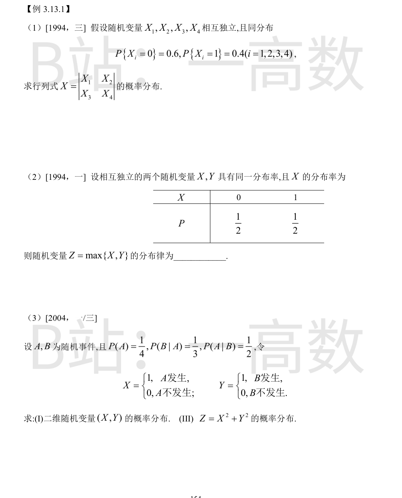
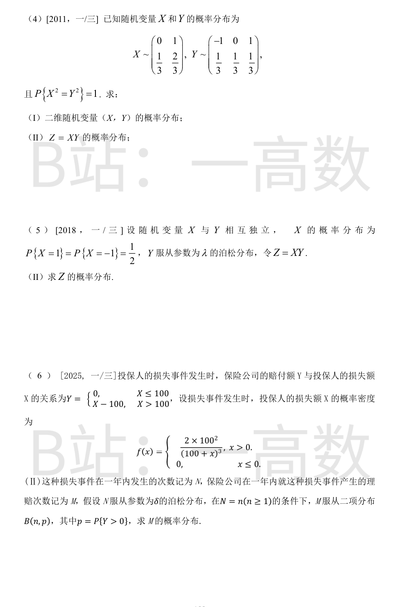
X 按对角线展开为 X = X1·X4 - X2·X3，可能取值 -1, 0, 1。
记 A = X1X4, B = X2X3，由独立性 A 与 B 独立，且 P{A=1} = 0.4² = 0.16，P{A=0} = 0.84。
$$P\{X=1\}=P\{A=1,B=0\}=0.16\times 0.84=0.1344$$
$$P\{X=-1\}=P\{A=0,B=1\}=0.84\times 0.16=0.1344$$
$$P\{X=0\}=1-2\times 0.1344=0.7312$$
即 X 的分布律为：取 -1, 0, 1 的概率分别为 0.1344, 0.7312, 0.1344。
Z = max{X,Y} 仅当 X=0 且 Y=0 时取 0：
$$P\{Z=0\}=P\{X=0,Y=0\}=\frac{1}{2}\cdot\frac{1}{2}=\frac{1}{4}$$
$$P\{Z=1\}=1-\frac{1}{4}=\frac{3}{4}$$
即 Z 取 0, 1 的概率分别为 1/4, 3/4。
P(AB) = P(A)P(B|A) = (1/4)(1/3) = 1/12；P(B) = P(AB)/P(A|B) = (1/12)/(1/2) = 1/6。
(I) 联合分布：
- P{X=1,Y=1} = P(AB) = 1/12
- P{X=1,Y=0} = P(A\B) = 1/4 - 1/12 = 1/6
- P{X=0,Y=1} = P(B\A) = 1/6 - 1/12 = 1/12
- P{X=0,Y=0} = 1 - 1/12 - 1/6 - 1/12 = 2/3
(III) Z = X²+Y² 取值 0, 1, 2：
- P{Z=0} = P{X=0,Y=0} = 2/3
- P{Z=1} = P{X=1,Y=0} + P{X=0,Y=1} = 1/6 + 1/12 = 1/4
- P{Z=2} = P{X=1,Y=1} = 1/12
由 P{X²=Y²}=1，在 {X=0, Y=±1} 与 {X=1, Y=0} 上 X²≠Y²，故这些格点概率为 0。
于是 P{X=0,Y=0} = P{X=0} = 1/3。设 P{X=1,Y=1} = P{X=1,Y=-1} = a，由 P{Y=1} = a + 0 = 1/3 得 a = 1/3。
联合分布表：
| | Y=-1 | Y=0 | Y=1 |
|---|---|---|---|
| X=0 | 0 | 1/3 | 0 |
| X=1 | 1/3 | 0 | 1/3 |
(II) Z=XY 取值 -1, 0, 1：
- P{Z=-1} = P{X=1,Y=-1} = 1/3
- P{Z=0} = P{X=0,Y=0} = 1/3
- P{Z=1} = P{X=1,Y=1} = 1/3
Z = XY。当 Y=0 时 Z=0，故
$$P\{Z=0\}=P\{Y=0\}=e^{-\lambda}$$
对 n = 1, 2, …：
$$P\{Z=n\}=P\{X=1\}P\{Y=n\}=\frac{1}{2}\cdot\frac{e^{-\lambda}\lambda^n}{n!}$$
$$P\{Z=-n\}=P\{X=-1\}P\{Y=n\}=\frac{1}{2}\cdot\frac{e^{-\lambda}\lambda^n}{n!}$$
即 Z 以 e^{-λ} 取 0，以 (1/2)e^{-λ}λ^n/n! 取每个非零整数 ±n。
先求 p：
$$p=P\{Y>0\}=P\{X>100\}=\int_{100}^{\infty}\frac{2\cdot 100^2}{(100+x)^3}dx=100^2\cdot\frac{1}{(100+100)^2}=\frac{1}{4}$$
再由全概率公式（泊松稀疏化）：对 m = 0, 1, 2, …
$$P\{M=m\}=\sum_{n=m}^{\infty}\frac{\delta^n e^{-\delta}}{n!}C_n^m\left(\frac{1}{4}\right)^m\left(\frac{3}{4}\right)^{n-m}$$
令 k=n-m：
$$P\{M=m\}=e^{-\delta}\frac{(\delta/4)^m}{m!}\sum_{k=0}^{\infty}\frac{(3\delta/4)^k}{k!}=e^{-\delta/4}\frac{(\delta/4)^m}{m!}$$
即 M ~ π(δ/4)。
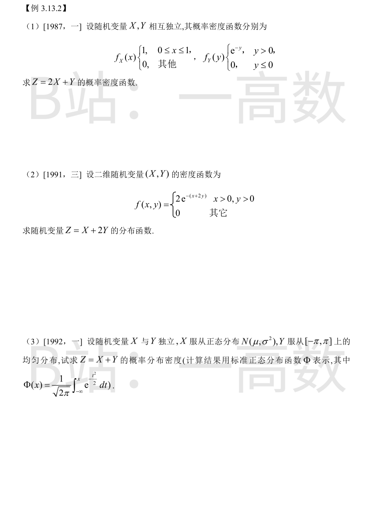
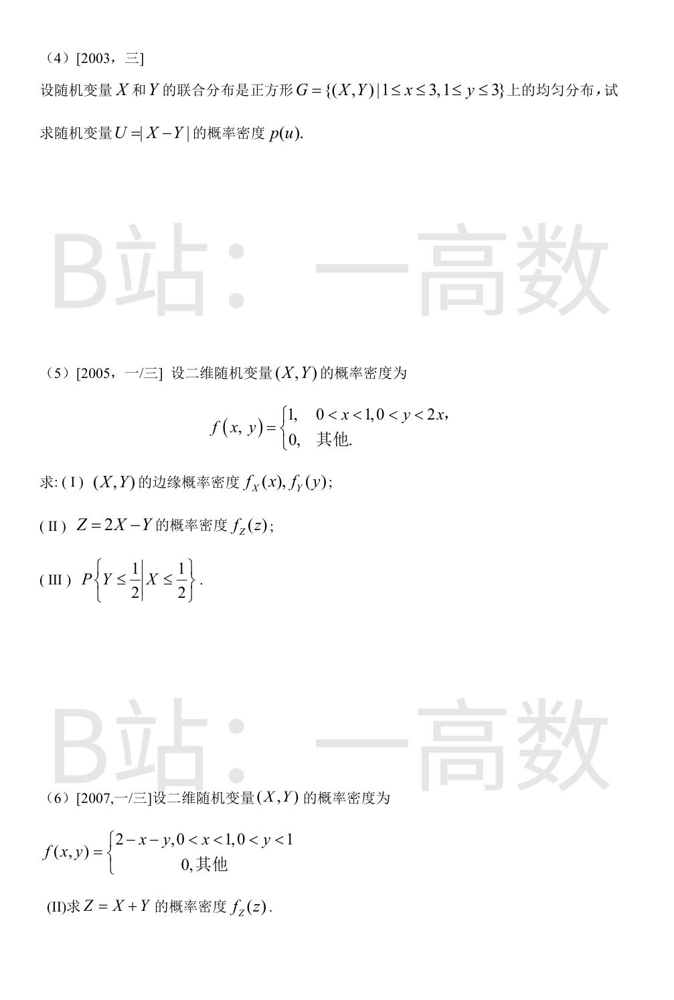
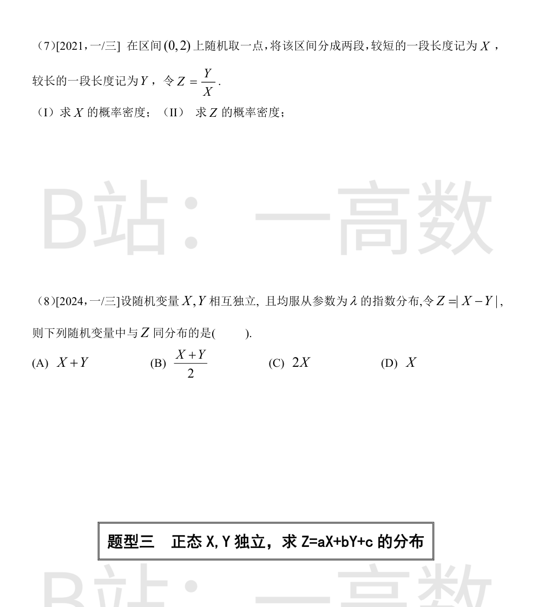
令 W=2X，则 f_W(w)=1/2 (0≤w≤2)。Z=W+Y，由独立卷积公式：
$$f_Z(z)=\int_{-\infty}^{\infty}f_W(w)f_Y(z-w)dw=\frac{1}{2}\int_{0}^{2}e^{-(z-w)}\cdot 1\{w<z\}\,dw$$
- z<0 时：f_Z(z)=0。
- 0<z<2 时：$$f_Z(z)=\frac{1}{2}\int_0^{z}e^{-(z-w)}dw=\frac{1}{2}(1-e^{-z})$$
- z>2 时：$$f_Z(z)=\frac{1}{2}e^{-z}\int_0^{2}e^{w}dw=\frac{1}{2}(e^2-1)e^{-z}$$
两段在 z=2 处衔接连续，均为 (1/2)(1-e^{-2})。
z≤0 时 F_Z(z)=0。z>0 时积分区域为 x>0, y>0, x+2y≤z：
$$F_Z(z)=\int_{0}^{z/2}dy\int_{0}^{z-2y}2e^{-(x+2y)}dx$$
内层积分：$$\int_0^{z-2y}2e^{-(x+2y)}dx=2e^{-2y}-2e^{-z}$$
再对 y 从 0 到 z/2：
$$F_Z(z)=\int_0^{z/2}(2e^{-2y}-2e^{-z})dy=(1-e^{-z})-ze^{-z}=1-(1+z)e^{-z}$$
f_Y(y)=1/(2π) (-π≤y≤π)。由独立性用卷积：
$$f_Z(z)=\int_{-\pi}^{\pi}\frac{1}{2\pi}\cdot\frac{1}{\sqrt{2\pi}\sigma}\exp\left\{-\frac{(z-y-\mu)^2}{2\sigma^2}\right\}dy$$
令 u=(z-y-μ)/σ（dy=-σdu），y=-π 对应 u=(z+π-μ)/σ，y=π 对应 u=(z-π-μ)/σ：
$$f_Z(z)=\frac{1}{2\pi}\int_{(z-\pi-\mu)/\sigma}^{(z+\pi-\mu)/\sigma}\frac{1}{\sqrt{2\pi}}e^{-u^2/2}du=\frac{1}{2\pi}\left[\Phi\left(\frac{z+\pi-\mu}{\sigma}\right)-\Phi\left(\frac{z-\pi-\mu}{\sigma}\right)\right]$$
G 面积为 4，f(x,y)=1/4。F(u)=P{|X-Y|≤u}。
- u<0：F(u)=0；u≥2：正方形内 |x-y|≤2 恒成立，F(u)=1。
- 0≤u<2：事件 {|X-Y|>u} 对应正方形内两个等腰直角三角形（分别位于 x-y>u 与 y-x>u），直角边长均为 2-u，面积之和为 (2-u)²。
$$F(u)=1-\frac{(2-u)^2}{4}$$
求导得
$$p(u)=\frac{2-u}{2},\quad 0<u<2$$
其余处 p(u)=0。
(I)
$$f_X(x)=\int_0^{2x}1\,dy=2x\ (0<x<1)$$
$$f_Y(y)=\int_{y/2}^{1}1\,dx=1-\frac{y}{2}\ (0<y<2)$$
其余处为 0。
(II) Z=2X-Y：直线 y=2x-z 落入区域需 0<2x-z<2x，即 x>z/2；且 x<1。0<z<2 时
$$f_Z(z)=\int_{z/2}^{1}1\,dx=1-\frac{z}{2}$$
其余处为 0。
(III)
$$P\{X\le 1/2\}=\int_0^{1/2}2x\,dx=\frac{1}{4}$$
$$P\{X\le 1/2, Y\le 1/2\}=\int_0^{1/4}\!\!\int_0^{2x}dy\,dx+\int_{1/4}^{1/2}\!\!\int_0^{1/2}dy\,dx=\frac{1}{16}+\frac{1}{8}=\frac{3}{16}$$
$$P\{Y\le 1/2\mid X\le 1/2\}=\frac{3/16}{1/4}=\frac{3}{4}$$
由卷积公式 f_Z(z)=∫f(x, z-x)dx，积分域为 0<x<1 且 0<z-x<1，即 max(0, z-1)<x<min(1, z)；被积函数 2-x-(z-x)=2-z 与 x 无关。
- 0<z<1：x∈(0, z)，
$$f_Z(z)=\int_0^{z}(2-z)dx=z(2-z)$$
- 1≤z<2：x∈(z-1, 1)，
$$f_Z(z)=\int_{z-1}^{1}(2-z)dx=(2-z)^2$$
- 其他 z：f_Z(z)=0。
设取点位置 U~U(0,2)，X=min(U, 2-U)。
(I) 0<x<1 时
$$F_X(x)=P\{U\le x\text{ 或 }U\ge 2-x\}=\frac{x+x}{2}=x$$
故 f_X(x)=1 (0<x<1)，即 X~U(0,1)。
(II) u<1 时 Z=(2-u)/u=2/u-1 单调递减；u>1 时 Z=u/(2-u) 单调递增。Z≥1。对 z≥1：
- u<1 段：Z≤z ⟺ 2/u-1≤z ⟺ u≥2/(1+z)；
- u>1 段：Z≤z ⟺ u≤2z/(1+z)。
$$F_Z(z)=\frac{\left(1-\frac{2}{1+z}\right)+\left(\frac{2z}{1+z}-1\right)}{2}=\frac{z-1}{z+1}$$
求导得
$$f_Z(z)=\frac{2}{(1+z)^2},\quad z>1$$
z≤1 时 f_Z(z)=0。（校验：∫_1^∞ 2/(1+z)² dz = 1。）
z≥0 时，由对称性
$$P\{Z>z\}=P\{X-Y>z\}+P\{Y-X>z\}=2P\{X-Y>z\}$$
X-Y 服从对称 Laplace 分布：
$$P\{X-Y>z\}=\int_z^{\infty}(1-e^{-\lambda(x-z)})\lambda e^{-\lambda x}dx=e^{-\lambda z}-\frac{1}{2}e^{-\lambda z}=\frac{1}{2}e^{-\lambda z}$$
故 P{Z>z}=e^{-λz}，即 Z~Exp(λ)，与 X 同分布。
排除：(A) X+Y~Γ(2,λ)；(B) (X+Y)/2 是 Γ(2,λ) 的线性变换，不是指数分布；(C) 2X~Exp(λ/2)。选 (D)。
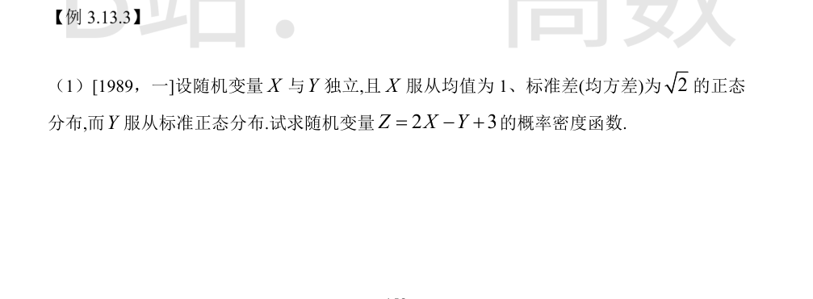
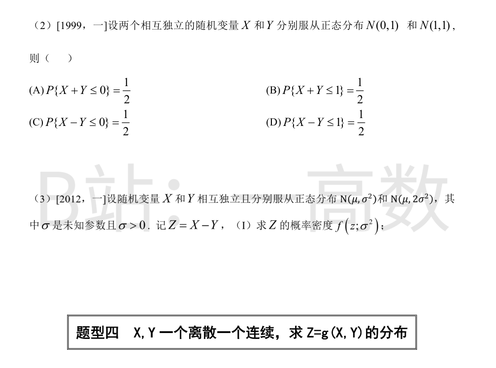
独立正态随机变量的线性组合仍为正态：
$$E(Z)=2\times 1-0+3=5,\qquad D(Z)=4\times 2+1=9$$
故 Z~N(5, 9)，
$$f_Z(z)=\frac{1}{3\sqrt{2\pi}}e^{-\frac{(z-5)^2}{18}},\quad -\infty<z<+\infty$$
X+Y~N(1, 2)：P{X+Y≤0}=Φ(-1/√2)<1/2，(A) 错；P{X+Y≤1}=Φ(0)=1/2，(B) 对。
X-Y~N(-1, 2)：P{X-Y≤0}=Φ(1/√2)>1/2，(C) 错；P{X-Y≤1}=Φ(√2)>1/2，(D) 错。选 (B)。
Z = X-Y 是独立正态之差：
$$Z=X-Y\sim N(\mu-\mu,\ \sigma^2+2\sigma^2)=N(0,\ 3\sigma^2)$$
故
$$f(z;\sigma^2)=\frac{1}{\sqrt{2\pi\cdot 3\sigma^2}}\exp\left\{-\frac{z^2}{2\cdot 3\sigma^2}\right\}=\frac{1}{\sqrt{6\pi}\,\sigma}e^{-\frac{z^2}{6\sigma^2}}$$
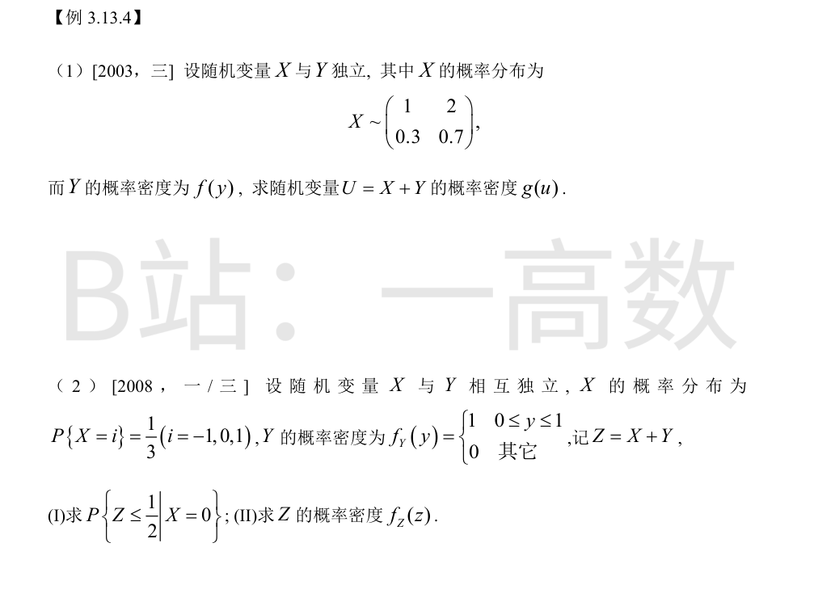
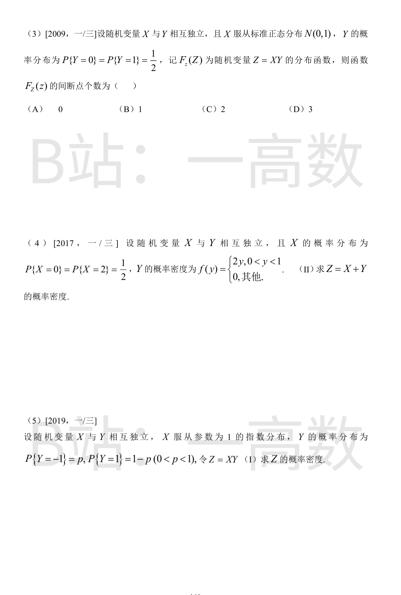
对 X 的取值用全概率公式分解：
$$g(u)=P\{X=1\}f(u-1)+P\{X=2\}f(u-2)=0.3f(u-1)+0.7f(u-2)$$
（X=k 时 U=X+Y 的密度即 f(u-k)。）
(I) 由独立性，X=0 时 Z=0+Y：
$$P\{Z\le 1/2\mid X=0\}=P\{Y\le 1/2\}=\int_0^{1/2}1\,dy=\frac{1}{2}$$
(II) 离散-连续混合的卷积：
$$f_Z(z)=\sum_{i=-1}^{1}P\{X=i\}f_Y(z-i)=\frac{1}{3}\left[f_Y(z+1)+f_Y(z)+f_Y(z-1)\right]$$
f_Y 的支撑为 [0,1]，三项分别给出 z∈[-1,0], [0,1], [1,2]，恰好首尾相接，故
$$f_Z(z)=\frac{1}{3},\ -1\le z\le 2;\qquad f_Z(z)=0,\ \text{其他}$$
Y=0 时 Z=0，Y=1 时 Z=X~N(0,1)，由全概率公式：
$$F_Z(z)=\frac{1}{2}P\{0\le z\}+\frac{1}{2}\Phi(z)$$
即
$$F_Z(z)=\begin{cases}\dfrac{1}{2}\Phi(z), & z<0\\[2mm] \dfrac{1}{2}+\dfrac{1}{2}\Phi(z), & z\ge 0\end{cases}$$
z→0⁻ 时 F_Z→1/4，而 F_Z(0)=1/2+1/4=3/4，在 z=0 处有幅度 1/2 的跳跃；其余处处连续。间断点个数为 1，选 (B)。
离散-连续混合卷积：
$$f_Z(z)=P\{X=0\}f_Y(z)+P\{X=2\}f_Y(z-2)=\frac{1}{2}f_Y(z)+\frac{1}{2}f_Y(z-2)$$
- 0<z<1：f_Y(z)=2z，f_Z(z)=(1/2)·2z=z；
- 2<z<3：f_Y(z-2)=2(z-2)，f_Z(z)=(1/2)·2(z-2)=z-2；
- 其他：0。
由全概率公式
$$F_Z(z)=P\{XY\le z\}=p\,P\{-X\le z\}+(1-p)\,P\{X\le z\}$$
对 z 求导（dP{-X≤z}/dz = f_X(-z)）：
$$f_Z(z)=p\,f_X(-z)+(1-p)\,f_X(z)$$
X~Exp(1)，f_X(t)=e^{-t} (t>0)：
- z<0 时：f_Z(z)=p·e^{-(-z)}=p e^{z}；
- z>0 时：f_Z(z)=(1-p)e^{-z}。
P{Z=0}=0，无原子。即 f_Z(z)=p e^{z} (z<0)，(1-p)e^{-z} (z≥0)。
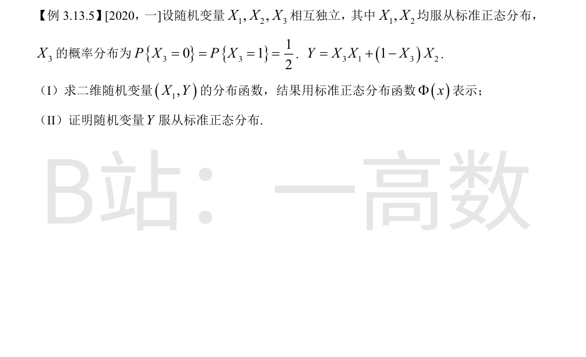
(I) 对 X_3 用全概率公式：
$$F(x,y)=P\{X_1\le x,\, Y\le y\}=P\{X_3=0\}P\{X_1\le x,\, X_2\le y\}+P\{X_3=1\}P\{X_1\le x,\, X_1\le y\}$$
X_3=0 时 Y=X_2；X_3=1 时 Y=X_1。故
$$F(x,y)=\frac{1}{2}\Phi(x)\Phi(y)+\frac{1}{2}\Phi(\min\{x,y\})$$
(II) 令 x→+∞ 得 Y 的边缘分布函数：
$$F_Y(y)=\lim_{x\to+\infty}F(x,y)=\frac{1}{2}\Phi(y)+\frac{1}{2}\Phi(y)=\Phi(y)$$
即 Y~N(0,1)。证毕。
【仲裁修正】独立校验发现分歧，经仲裁重解，以本答案为准：B 第二项误为 \frac12\Phi(x)\Phi(\min{x,y})（多乘 Φ(x)），其分段式 {Φ²(x), Φ(x)Φ(y)} 也与真值不符（x=0,y=1 时真值≈0.4603，B 给 0.25），且 B 的展开式与自身分段式互相矛盾
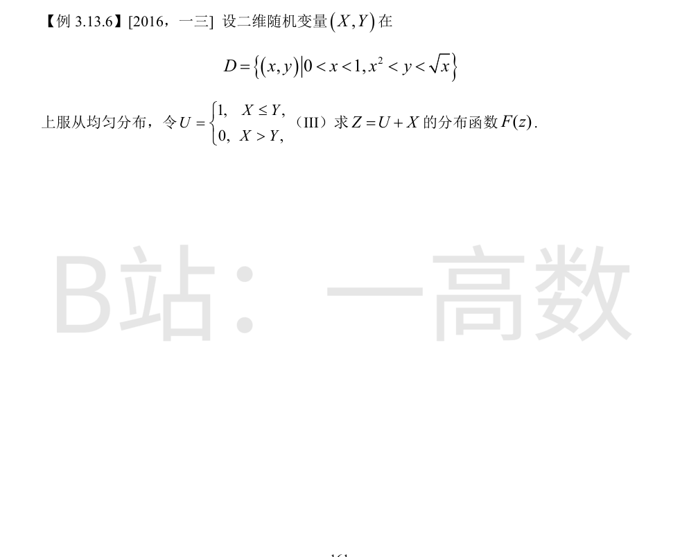
D 的面积 A=∫_0^1 (√x-x²)dx = 2/3-1/3 = 1/3，故 f(x,y)=3（D 内），边缘 f_X(x)=3(√x-x²) (0<x<1)。
给定 X=x 时 Y 在 (x², √x) 内均匀。记 t=√x（0<t<1），由 x²<x<√x：
$$P\{U=1\mid X=x\}=\frac{\sqrt{x}-x}{\sqrt{x}-x^2}=\frac{1-t}{1-t^3}=\frac{1}{1+t+t^2},\qquad P\{U=0\mid X=x\}=\frac{t+t^2}{1+t+t^2}$$
Z=U+X，故 F(z)=P{U=0, X≤z}+P{U=1, X≤z-1}。以 t=√x 换元（dx=2t dt，√x-x²=t(1-t)(1+t+t²)）：
$$A(s):=P\{U=0, X\le s\}=\int_0^{s}3\cdot\frac{t+t^2}{1+t+t^2}(\sqrt{x}-x^2)dx=\int_0^{\sqrt{s}}6t^3(1-t^2)dt=\frac{3}{2}s^4-s^6$$
$$B(s):=P\{U=1, X\le s\}=\int_0^{s}3\cdot\frac{1}{1+t+t^2}(\sqrt{x}-x^2)dx=\int_0^{\sqrt{s}}6t^2(1-t)dt=2s^3-\frac{3}{2}s^4$$
（校验：A(1)+B(1)=1/2+1/2=1。）
- z<0：F(z)=0。
- 0≤z<1：只有 U=0 项有贡献（U=1 时 Z=X+1>1），F(z)=A(√z)=(3/2)z²-z³。
- 1≤z<2：F(z)=A(1)+B(√(z-1))=1/2+2(z-1)^{3/2}-(3/2)(z-1)²。
- z≥2：F(z)=1。
（衔接校验：z=1 处左极限=F(1)=1/2，右支也为 1/2；z=2 处 1/2+2-3/2=1。）
【仲裁修正】独立校验发现分歧，经仲裁重解，以本答案为准：A 把 0≤z<1 段误用 X 的边缘分布 2z^{3/2}-z^3（正确为 P{U=0,X≤z}=(3/2)z²-z³），第三段 -(z-1)^3 应为 -(3/2)(z-1)^2；A 的函数在 z=1 处由 1 跳回 1/2 且 F(2)=3/2>1，不是分布函数
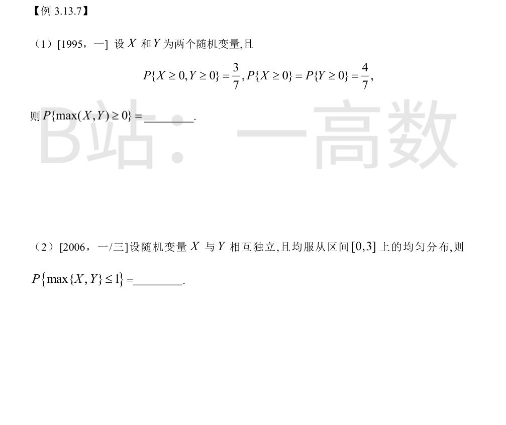
{max(X,Y)≥0} = {X≥0} ∪ {Y≥0}，由加法公式：
$$P\{\max(X,Y)\ge 0\}=P\{X\ge 0\}+P\{Y\ge 0\}-P\{X\ge 0, Y\ge 0\}=\frac{4}{7}+\frac{4}{7}-\frac{3}{7}=\frac{5}{7}$$
由独立性：
$$P\{\max\{X,Y\}\le 1\}=P\{X\le 1\}P\{Y\le 1\}=\frac{1}{3}\cdot\frac{1}{3}=\frac{1}{9}$$
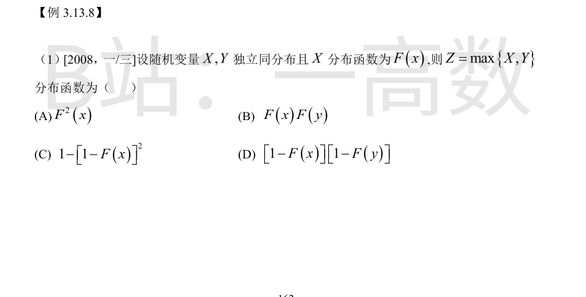
$$F_Z(z)=P\{\max\{X,Y\}\le z\}=P\{X\le z, Y\le z\}=P\{X\le z\}P\{Y\le z\}=F^2(z)$$
由独立同分布即得 (A)。
辨析：(B) F(x)F(y) 是二维 (X,Y) 的联合分布函数，是二元函数；一维随机变量 Z 的分布函数必须是单个变量 z 的一元函数，故 (B) 不对；(C)(D) 是与 min{X,Y} 相关的形式。选 (A)。